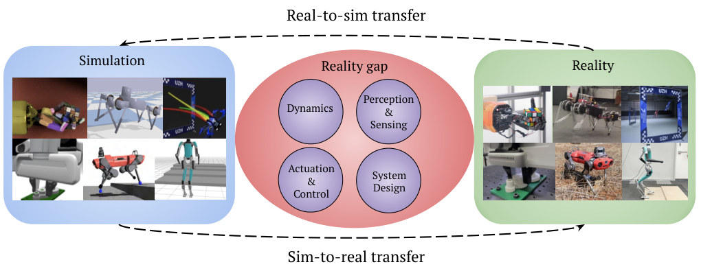
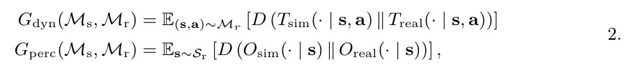
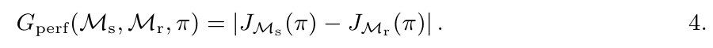
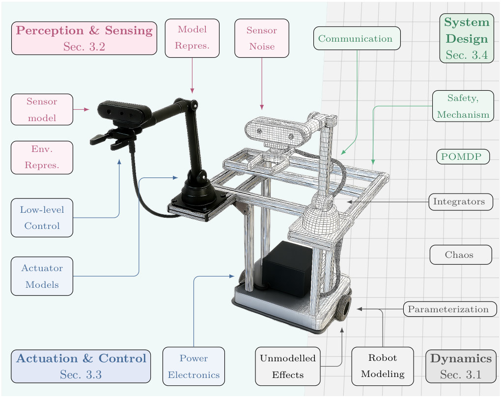
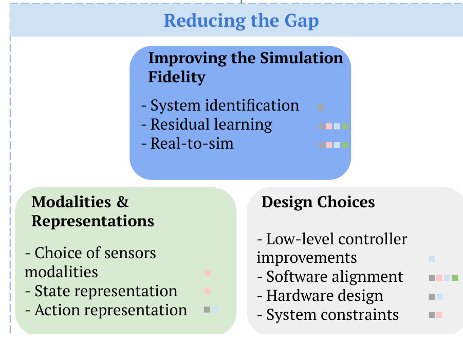
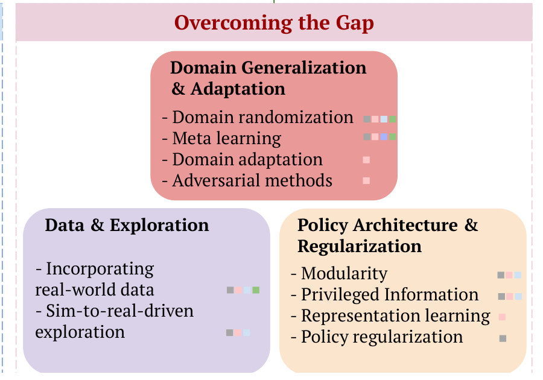
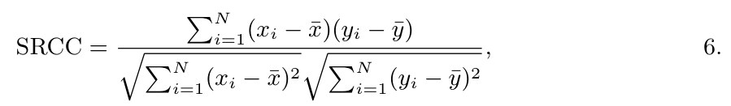
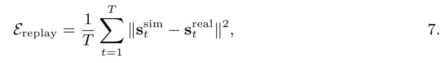
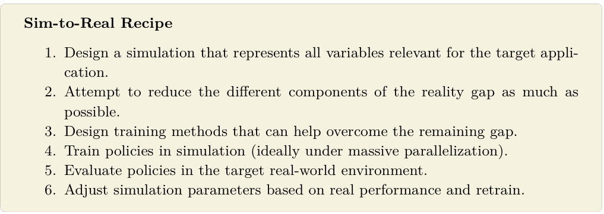
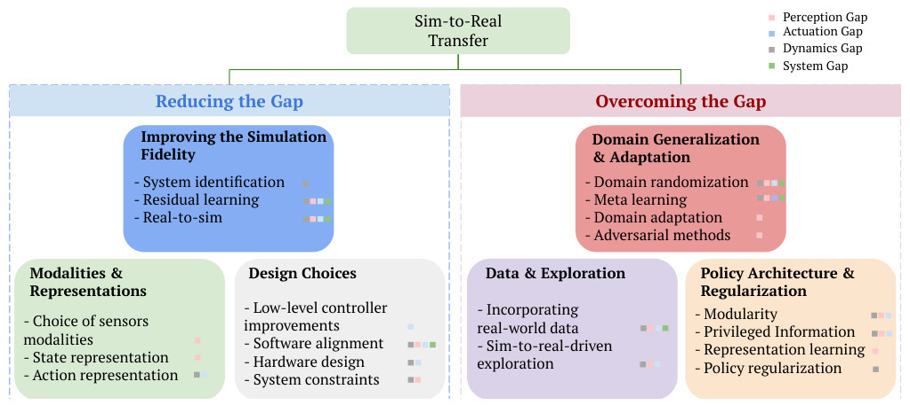

Sim-robot-learning · 归档于 2026-11-05
RealityGap
The Reality Gap in Robotics: Challenges, Solutions, and Best Practices
归档到 Robot learning in simulation：这是 sim-to-real transfer 的综述；它也给 Agent-centric real-to-sim 里的每篇论文提供问题框架。
TL;DR
- Problem
- 仿真只是近似，policy 在仿真里的好成绩到真机上可能失效；reality gap 不是一个量，而是很多 sub-gap 叠在一起。
- Idea
- 把 gap 拆成 4 类、18 个来源，每个配 Symptom；把解法分成 Reducing（改仿真和接口）与 Overcoming（改训练和 policy）；把度量分成测 gap 与测 transfer。
- Result
- 没有实验，也没有成功率。产物是 Fig. 3 这张地图：20 个方法、47 个色块，6 个方法覆盖全部 4 类 gap，8 个只对应 1 类（统计是我从图里数的）。
Problem
一个 policy 在仿真里能把方块推到位，上了真机可以从四个不同的地方坏掉
Running example · 后面每个 stage 都跟着它走
桌面推方块（block pushing）：§6.4 用 a manipulator pushes a block on a table 举例，§4.2.3 的 Clavera et al. (114) 迁移的也是 pushing policy，§5.2 的任务指标就是 object-distance-to-goal。输入：仿真里训好的 push policy → 想要：真机上把方块推到目标点。这是综述，论文没给这个例子任何数字，这一页也不编。
flowchart LR IN["例子输入
仿真里训好的
push policy"]:::example IN --> A1["Dynamics gap
接触被简化
质量、摩擦填错"] A1 --> AX["推过头或推不到
overshoot, undershoot"]:::gap IN --> B1["Perception gap
渲染的方块和
相机里的不一样"] B1 --> BX["认不出方块
fail to recognize"]:::gap IN --> C1["Actuation gap
命令经过隐藏 filter
和低层控制器"] C1 --> CX["手臂没按命令走
not the expected motion"]:::gap IN --> D1["System design gap
控制频率不同
virtual walls 没建模"] D1 --> DX["失稳，或应对不了安全机制
mismatched frequencies"]:::gap
四条线是四类 gap，不是 baseline：综述没有 baseline。红框的症状改写自论文边注 Symptom（§3.1.2、§3.2.3、§3.3.2、§3.4.2 和 §3.4.4），原话是通用的，都没有数字；把它们放到推方块上是我的推断。
根本问题：没有 perfect simulator，gap 又由大量 sub-gap 组成，policy 还会专门利用仿真的 corner case（§1）。 这篇的切入点：先分清 reality gap 和 performance gap，再把 causes → symptoms → solutions → metrics 接成一张表。
Related work
| 相关工作 | 解决什么 | 怎么解决 | 和本文的区别 |
|---|---|---|---|
| 同一问题 · 别的解法 | |||
| DR 专题综述 Muratore et al. 2022 (98) | 用随机化仿真学 policy | 梳理 DR，含 SBI 求随机化分布 | 只讲一个方法 → 本文把 DR 放进 20 个方法的地图 |
| Learned world models Genie (157)、GEM (158)、Cosmos (159) | 不靠 white-box simulator 也能预测环境 | 从真实数据学环境模型 | 有 compounding errors、数据需求高 → 本文仍以 simulator 为主线，把它列为开放问题 |
| 真机数据路线 Open X-Embodiment (173)、DROID (174) | 给大模型提供带动作的数据 | 真机采集 + imitation learning | 受人力和硬件限制 → 本文把 simulation 当合成数据的补充（§6.5） |
| 相似做法 · 别的问题 | |||
| Differentiable simulators 综述 Newbury et al. 2024 (151) | 让仿真能求梯度 | Autodiff 或手写解析梯度 | 讲工具，不讲 gap → 本文只问它怎样配 learned dynamics（§6.2） |
| 用仿真评测 policy Li et al. 2024 (177)、Barreiros et al. 2025 (178) | 可重复地评测真机 policy | 校准 gap，让仿真分数接近真机分数 | 目标是评测不是训练 → 本文当作开放问题（§6.5） |
来源：论文 §1、§4.2.1、§6.2、§6.3、§6.5。这篇没有 Related Work 一节，也没写自己和以前的综述有何不同，所以"区别"一列是从这些段落读出来的；未另行检索。
Level 1 · Big picture
gap 分四类，解法分两路，度量也分两种：测环境差多少，测 policy 掉多少

怎么读这张图
- 左 "Simulation"、右 "Reality"：同样六个任务的仿真图和真机图，取自成功的 sim-to-real 工作（3, 4, 5, 6, 7, 8）。推方块也有这样一对：仿真桌和真桌。
- 中间 "Reality gap" 的四个圆：Dynamics、Perception & Sensing、Actuation & Control、System Design。这是 §3 的四节，也是 Problem 图的四条线。
- 下方 "Sim-to-real transfer"：把仿真里学到的东西带到真机，是全文主线。
- 上方 "Real-to-sim transfer"：从真实数据建仿真。图注说两个方向都要克服剩下的 gap。§4 里 Real-to-sim 只是 Reducing 下的一个方法（Stage 3）。
flowchart LR G["Causes §3
4 类 gap，18 个来源"] --> S["Solutions §4
Reducing, Overcoming"] S --> M["Metrics §5
测 gap，测 transfer"]
- 第一个区分：reality gap 是环境差多少，performance gap 是同一 policy 两边的成绩差多少。目标是后者（eq. 5）：policy 够 robust 时，gap 不必消除。
- 第二个区分：Reducing 让仿真和系统更接近真实；Overcoming 接受一个 "fixed reality gap"，让 policy 不依赖或能适应它（§4）。
Level 2 · Stages
综述没有方法，这里的 6 个 stage 是它自己的章节
flowchart TD S1["1 · Preliminaries §2
环境差 vs 成绩差"] --> S2["2 · Sources of Reality Gap §3
摩擦填错，渲染不像"] S2 --> S3["3 · Reducing the Gap §4.1
测摩擦，改用 depth"] S2 --> S4["4 · Overcoming the Gap §4.2
随机化质量和摩擦"] S3 --> S5["5 · Evaluation Metrics §5
replay 误差，距目标的距离"] S4 --> S5 S5 --> S6["6 · Open Problems §6
阻力来自质量还是摩擦"] click S1 href "#stage-1" click S2 href "#stage-2" click S3 href "#stage-3" click S4 href "#stage-4" click S5 href "#stage-5" click S6 href "#stage-6"
点击 stage 展开 Level 3 细节。跨 stage 的流程是 Sim-to-Real Recipe。方法和 gap 的完整地图在 Results E1。每个 stage 的例子框是我把论文的方法放到推方块上的示例；带引用号的句子来自论文。
Level 3 · Details
每个 stage 的细节
Stage 1 Preliminaries：两种 gap 仿真和真实两个 POMDP → reality gap、performance gap 的定义
- Why：后面每个方法都要说清楚：缩小的是环境差，还是成绩差。
- How：把机器人问题写成 POMDP；仿真和真实各是一个 POMDP。
- 关键句：完全复现真实 dynamics 和观测 "not practically achievable nor required"；policy 对差异 robust 时一样能迁移（§2.3）。
flowchart LR E["两个 POMDP
仿真桌，真桌"] --> R["Reality gap eq. 2
环境差多少"] E --> P["Performance gap eq. 4
同一 policy 差多少"] P --> G["目标 eq. 5
对 policy 求最小"]:::win
符号
| 符号 | 白话 | 在推方块里 |
|---|---|---|
| 𝓜s，𝓜r | 仿真环境、真实环境（各是一个 POMDP） | 模拟器里的桌面，真桌面 |
| s，a | state，action | 方块和手臂的状态，手臂的命令 |
| Tsim，Treal | transition dynamics：给定 s、a，下一状态怎么分布 | 推一下，方块滑多远 |
| Osim，Oreal | observation model：给定 s，传感器读到什么 | 渲染图，相机图 |
| D | 衡量两个分布差多少的 divergence | 论文没指定用哪一种 |
| π | policy | push policy |
| J𝓜(π) | π 在环境 𝓜 里的 expected discounted return | 两边各自的平均回报 |

- 第一行，dynamics gap（Gdyn）：取真实环境里出现的 state 和 action，比较"仿真预测的下一状态"和"真实下一状态"的分布，再取平均。
- 第二行，perception gap（Gperc）：取真实 state，比较仿真和真实各自的传感器读数分布。
- 注意：这里只给了两类的公式。actuation gap 只有 §3.3 的文字定义，System Gap 只出现在 Fig. 3 图例。

Running example 在这一步
真桌面的摩擦和仿真不同，Gdyn 就大于零。但 policy 如果能看着方块实时修正，两边的回报可能差不多，Gperf 仍然小。论文的目标看后者。（数字论文没给；这是我的示例。）
Stage 2 Sources of Reality Gap：4 类，18 个来源 reality gap → 每个来源和它的 Symptom
- Why：论文说把 gap 当成一个东西是 "common misconception"（§1）。不知道是哪个来源，就选不对解法。
- How：§3 四节，18 个编号小节；大多数来源旁边有一条 Symptom 边注，写 policy 在真机上的具体表现。
flowchart LR G["Reality gap
推方块失败"]:::example G --> D["Dynamics §3.1
Modeling · Parameterization
Numerical Integrators
Human-Robot Interaction
Unmodeled Effects
Asset Fidelity"] G --> P["Perception and Sensing §3.2
Sensor Model · Sensor Noise
Environment Representation
Robot Model
Collision Sensing"] G --> A["Actuation and Control §3.3
Actuator Models
Low-level Control
Power Electronics"] G --> S["System Design §3.4
Communication
Safety Mechanisms
POMDP Formulation
Implementation Details"] D --> DE["stick 和 slip 交替"] P --> PE["桌面反光没渲染"] A --> AE["零速附近 dead zone"] S --> SE["控制频率对不上"]

怎么读这张图
- 中间的机器人：左半是实物，右半是线框网格，同一台车，意思是每个部件都有实物和模型两个版本。
- 左上粉色 "Perception & Sensing"：Sensor model、Env. Repres.、Model Repres.、Sensor Noise。
- 左下蓝色 "Actuation & Control"：Low-level Control、Actuator Models、Power Electronics。
- 右下灰色 "Dynamics"：Robot Modeling、Unmodelled Effects、Parameterization、Chaos、Integrators。
- 右上绿色 "System Design"：Communication、Safety, Mechanism、POMDP。
- 图里没有的：§3 正文的 Human-Robot Interaction、Asset Fidelity、Collision Sensing、Implementation Details 四项没画，以下表为准。
| 来源 | 差在哪 | Symptom（论文边注） |
|---|---|---|
| Dynamics · §3.1（transition model T） | ||
| 3.1.1 Modeling · Rigid body dynamics | 真实 links 会弯会振，关节有 damping、backlash；仿真当刚体和理想关节 | 碰到真实 deformable object 时行为出乎意料 |
| 3.1.1 · Chaotic nature | 对初始条件敏感，完美模型也不可复现 | overfit 的 policy，初始条件略变就不可预测地失败 |
| 3.1.1 · Stochasticity | 地面、摩擦变化和 debris；仿真忽略或用 Gaussian noise | 没有单独的边注 |
| 3.1.1 · Battery | 电压随负载下跌，可用 torque 也下跌 | 实际 torque 低于动作所需 |
| 3.1.1 · Contact Dynamics | 真实 sticking、slipping、separation 交替；仿真用 point contact、linearized friction cone、spring-damper | 接触假设太简单，抓取时打滑或不稳 |
| 3.1.2 Parameterization | friction、aerodynamics、mass、inertia 难测，还会变 | overshoot 或 undershoot |
| 3.1.3 Numerical Integrators | 离散和积分方法引入误差，精度和速度要取舍 | 长任务里小误差累积，性能下降 |
| 3.1.4 Human-Robot Interaction | 人被简化成预定义的运动模式 | policy 利用了模拟人的错误假设 |
| 3.1.5 Unmodeled Effects | 磨损、疲劳、温度变化 | 性能随时间漂移，出现振动和不稳 |
| 3.1.6 Asset Fidelity | 几何和材料参数被简化，机器人自身几何也是 | 按不准的几何假设行动，发生碰撞 |
| Perception and Sensing · §3.2（observation model O） | ||
| 3.2.1 Sensor Model | RGB、Depth、LiDAR、其他传感器都被理想化，也包括安装位置；缺 lens flare、rolling shutter、IMU drift | 传感器伪影造成观测分布的巨大差异 |
| 3.2.2 Sensor Noise | 真实噪声非 Gaussian、state-dependent、temporally correlated；仿真多用固定方差 Gaussian | 在简单噪声上训练的 policy overfit，真机失败 |
| 3.2.3 Environment Representation | 低精度 asset、简化的 scene graph、generic material | 认不出物体，或在真实房间里迷路 |
| 3.2.4 Robot Model | CAD、URDF、USD 省略制造公差、磨损、backlash | 没有边注；正文：self-collisions、unstable motions、任务失败 |
| 3.2.5 Collision Sensing | 用 bounding volumes、convex 或 sphere decomposition 代替精细 mesh，按离散时间判定 | 灵巧操作时施力不对或抓不住 |
| Actuation and Control · §3.3 | ||
| 3.3.1 Actuator Models | 仿真当一阶系统；真实是高阶，有 dead-zone、backlash、hysteresis | 运动 jerky、delayed、unstable，高速时尤甚 |
| 3.3.2 Low-level Control | 厂商固件里的 filter、anti-windup、rate limiting，通用仿真不模拟 | 命令被隐藏 filter 改写，运动不对，甚至失稳 |
| 3.3.3 Power Electronics | 驱动器内环延迟 hundreds of microseconds，PWM 量化，电流电压硬限 | 细微动作失败，零速附近 jitter 或 dead zone |
| System Design · §3.4 | ||
| 3.4.1 Communication | 真实有 delays 和 packet loss，还有逐步安全停车的机制 | 冻结、变慢，或出现 policy 之外的 jerky fallback |
| 3.4.2 Safety Mechanisms | virtual walls 等只存在于真机 | policy 对训练时没见过的安全机制反应不了 |
| 3.4.3 POMDP Formulation | reward、termination 用了 privileged 数据（如精确碰撞）；reset 真实做不到 | 真机评测和仿真的 state-action 分布、reward 不同 |
| 3.4.4 Implementation Details | 离散粒度、积分和微分步骤、控制频率不同 | 频率或数值方法不一致，导致失稳 |
18 个编号小节；3.1.1 Modeling 按论文的五个 bullet 展开，所以表有 22 行。
Running example 在这一步
方块摩擦随相对速度变、在 stick 和 slip 之间切换，落在 3.1.1 Contact Dynamics；质量和摩擦填错落在 3.1.2 Parameterization，Symptom 是 overshoot 或 undershoot。方块形状的 mesh 粗糙落在 3.1.6 Asset Fidelity 和 3.2.3 Environment Representation：同一件事，分别影响 dynamics 和 perception（§3.2.3）。
Stage 3 Reducing the Gap：让仿真和系统更接近真实 某个 gap 来源 → 更准的仿真、gap 更小的接口、更好模拟的系统
- Why：有些来源可以直接消掉，或换一个 gap 更小的接口绕开。
- How：三条路：改善仿真（§4.1.1）、选 gap 小的模态和表示（§4.1.2）、把系统设计得容易模拟（§4.1.3）。
flowchart LR R["Reducing the Gap
缩小差别本身"]:::example R --> A["Improving Simulation §4.1.1
System Identification
Learned Residual Models
Real-to-Sim First"] R --> B["Modalities, Representations §4.1.2
Choice of Modalities
State Representations
Action Representations"] R --> C["Design Choices §4.1.3
Low-level Controller Improvements
Software Stack Alignment
Hardware Design
Constraining System Dynamics"] A --> AE["估质量和摩擦"] B --> BE["用 depth 看方块"] C --> CE["慢慢推"]

| 方法 | 怎么做 | 代表工作 | 论文说的前提或短板 |
|---|---|---|---|
| Improving Simulation · §4.1.1 | |||
| System Identification | 用真机数据估物理参数，也估 latency、control frequency、actuation delay；近来在真机评测的迭代中 online 地做 | (8, 4, 44, 45, 46)；online：(47–50) | 模型假设本身错时可能无效，如用 rigid-body 建 compliant body |
| Learned Residual Models | 学一个模型修正模拟器。改 outputs：Golemo (51)、Ajay (52)、Gruenstein (53)、Bauersfeld (54)、Gao (55)。改 inputs（动作）：Christiano (56)、Hanna (57) | LSTM、stochastic RNN、inverse dynamics model | — |
| Real-to-Sim First | 测试时用真实数据 𝒟real 现场建环境，三个面：geometry、kinematics and dynamics、visuals and rendering | (58–68, 46)；geometry (69–71)；articulation (66, 72, 68)；NVS (73, 74) | 某个 DoF 在采集时没被动过，就很难推断 (67)；foundation model 方法仍有 "considerable gap" |
| Choice of Modalities and Representations · §4.1.2 | |||
| Choice of Modalities | depth 或 point cloud 的 gap 小于 RGB images | (84, 75, 79, 80, 81) | RGB 难以 photo-realistic 渲染（§3.2.1） |
| State Representations | inferred depth maps、keypoint detections、visual feature tracking、foundation model embeddings | (87, 90, 89) | — |
| Action Representations | 动作空间影响 transfer，在 navigation、locomotion、manipulation 都有证据；manipulation 里如 joint velocity control | (91, 92, 25) | — |
| Design Choices · §4.1.3 | |||
| Low-level Controller Improvements | 提高控制频率或 bandwidth，更快响应 latency、noise、unmodeled dynamics | Zhang et al. (93)：高频 impedance controller | — |
| Software Stack Alignment | 让仿真和部署用一致的 control rates、filters、safety checks | 论文没给引用 | 小差异就能导致性能下降 |
| Hardware Design | 选低延迟、torque 一致的 actuator，噪声特性清楚的 sensor；passive stability、compliant actuators、简单 kinematics | hardware 和 learning 的 co-design (94) | — |
| Constraining System Dynamics | 部署初期限速，避开激烈动作；限制在 quasi-static regime | Chen et al. (95) | — |
— 表示论文没写。
Running example 在这一步
System Identification 估质量和摩擦。若刚体接触假设本身不够，改用 residual：Ajay et al. (52) 用 stochastic RNN 捕捉 contact dynamics 的不确定性，这篇的 case study 正是 planar pushing。Real-to-Sim First 从真桌面的数据重建方块的几何、动力学和外观。接口上改用 depth，动作用 joint velocity (25)。最后慢慢推，留在 quasi-static (95)。
Stage 4 Overcoming the Gap：gap 不动，改训练和 policy 剩下的 gap → 不依赖它、能适应它的 policy
- Why：总有建不准的部分。这类方法 "assumes a fixed reality gap"，和 Reducing 是 orthogonal（§4.2）。
- How：三条路：让 policy 见过足够多的变化（§4.2.1）、选对训练数据和探索（§4.2.2）、改 policy 的结构和约束（§4.2.3）。
flowchart LR R["Overcoming the Gap
让 policy 扛得住"]:::example R --> A["Domain Generalization and
Adaptation §4.2.1
Domain randomization
Adversarial Training
Meta Learning · Domain Adaptation"] R --> B["Data Selection and
Exploration §4.2.2
Incorporating real-world data
Sim-to-real-driven exploration"] R --> C["Policy Architecture and
Regularization §4.2.3
Modularity · Privileged information
Representation learning
Policy regularization"] A --> AE["随机化质量和摩擦"] B --> BE["混入少量真机数据"] C --> CE["视觉和控制分模块"]

| 方法 | 怎么做 | 代表工作 | 论文说的前提或短板 |
|---|---|---|---|
| Domain Generalization and Adaptation · §4.2.1 | |||
| Domain randomization (DR) | 在宽分布上训练：texture、lighting、observation 和 action noise、mass、inertia、system delays、object properties | (11)；automatic DR (3)；用真实数据定范围 (97, 48)；综述 (98) | 省掉 "painstaking" 的 system identification (96)；分布怎么选是难点，所以才有自动化的工作 |
| Adversarial Training | 再训一个 adversary agent 施加 disturbances，破坏主 policy | Pinto et al. (99) | — |
| Meta Learning | policy 在内部识别参数变化并适应；RMA 用 privileged 信息学 latent 环境表示 | (100, 101)；RMA (104) | — |
| Domain Adaptation | 主要让观测适应分布偏移，不一定适应 dynamics 的变化 | (10, 105, 48, 106) | 主要处理观测 |
| Data Selection and Exploration · §4.2.2 | |||
| Incorporating real-world data | 把真实数据混进训练：惩罚和真实 dynamics 不符的仿真样本 (107)、real-to-sim-to-real (58)、residual RL (108)、co-training (109–111) | Niu (107)、Torne (58)、Ankile (108)、Maddukuri (109) | — |
| Sim-to-real-driven exploration | 学探索 policy 在真机上识别关键参数，或只为真机学习而探索 | Liang (112)；(113, 46) | — |
| Policy Architecture and Regularization · §4.2.3 | |||
| Modularity | 视觉和低层控制各自管理；或 high-level 协调多个 low-level skill | Clavera (114)、Mueller (115)、Zhang (116)、Julian (117) | — |
| Privileged information | 训练时用部署时没有的信息：asymmetric actor-critic、teacher-student distillation | RMA (104)、Pinto (121)、Radosavovic (7)、Krinner (123) | 有 student-teacher asymmetry，要合并 RL 和蒸馏 loss (7, 122) |
| Representation learning | 用 self-supervised 目标学对 domain shift 稳的特征 | Tanwani (124)、Yoneda (125)、Xing (126) | — |
| Policy regularization | 惩罚动作幅度和变化、速度、加速度、功率；或用 smoothness loss | (44, 21, 127, 128, 25)；Mysore (130)、Chen (131) | 论文说 loss 形式相对 reward 工程有 "clear advantage" (130) |
— 表示论文没写。§4.2 的边注也写 "can reduce"，但这些方法假定 gap 不变，所以 Fig. 3 的色块在这半边应读作"针对哪类 gap"，不是"缩小它"（我的读法）。
Running example 在这一步
DR：每个 episode 换方块的质量、摩擦和桌面纹理。Modularity：Clavera et al. (114) 把视觉和低层控制分开，论文说这样实现了 pushing policies 的 robust transfer。Incorporating real-world data：混入少量真机推方块的数据。Policy regularization：惩罚动作突变，别让 policy 靠高频抖动推动方块。
Stage 5 Evaluation Metrics：测 gap，测 transfer 仿真和真机的记录 → 6 个度量
- Why：测 gap 告诉你仿真哪里不行；测 transfer 告诉你在这个 gap 下 policy 表现如何。论文把两者明确分开（§5）。
- How：§5.1 三个度量测 gap，§5.2 三个度量测 transfer。
flowchart LR M["Evaluation Metrics
推方块记录"]:::example M --> A["Assessing the Reality Gap §5.1
Sim-to-real Correlation Coefficient
Offline Replay Error
Visual Fidelity Analysis"] M --> B["Assessing Sim-to-Real Transfer §5.2
Success rate
Cumulative reward
Task-specific metrics"] A --> AE["回放真机动作，
比方块轨迹"] B --> BE["方块离目标多远"]
| 度量 | 回答什么 | 怎么算 | 论文说的短板 |
|---|---|---|---|
| Assessing the Reality Gap · §5.1 | |||
| SRCC (132) | 仿真里的进步，能不能带来真机的进步 | N 个 policy 两边都测，算成绩的 Pearson correlation（eq. 6） | 真机成绩高但 SRCC 低的 simulator 仍有问题：改动都得回真机验证 |
| Offline Replay Error (25) | 部署不可行时，仿真有多像真实 | 真机动作在仿真里 open-loop 回放，比状态（eq. 7） | 优点是便宜、可离线。误差高是 gap 大的 "strong indicator"；只限于这条 policy 诱导的分布 |
| Visual Fidelity Analysis | 视觉 domain gap 多大 | 分布级：IS、FID、KID、TSNE。单图：SSIM、PSNR、IPD | 主要对 visuomotor policy 和视觉表示方法有意义 |
| Assessing Sim-to-Real Transfer · §5.2 | |||
| Success rate | 任务完成的比例 | Nsuccess / Ntotal | 二值、聚合，看不出在哪失败、为什么失败 |
| Cumulative reward | 过程和效率 | R = Σ rt | 依赖两边 reward 一致；不同 RL 配置难比较 |
| Task-specific metrics | 细粒度的行为和失败模式 | path efficiency、time-to-goal、object-distance-to-goal | 难标准化，方法间难公平比较 |
符号
| 符号 | 白话 | 在推方块里 |
|---|---|---|
| xi，yi | 第 i 个 policy 在仿真、真机的成绩（如成功率） | 第 i 个 push policy 的两个成功率 |
| x̄，ȳ | 两列成绩的均值 | 同左 |
| N | 参与比较的 policy 数 | 论文没规定 |
| streal | 真机 rollout 在第 t 步的状态 | 记录下的方块和手臂状态 |
| stsim | 把同样的真机动作 open-loop 放进仿真得到的状态 | 仿真里被同样动作推动的方块 |
| T | 轨迹长度 | 一次推动的步数 |


Running example 在这一步
测 gap：录一段真机推方块，把同样的动作放进仿真，比方块轨迹（Ereplay）；或把 N 个 push policy 两边都测，算 SRCC。测 transfer：object-distance-to-goal (25) 比 success rate 细，能分清"差一点到位"和"根本没碰到"。
Stage 6 Discussion and Open Problems：5 个方向 现有方法的缺口 → 未解决的问题
- Why：§6 开头说 "it is unclear whether simulation will remain a major tool"，所以要问它还能往哪走。
- How：五个小节，每节给现状和一个 open question。
flowchart LR O["Open Problems
推方块还差什么"]:::example O --> A["Wrong Models, Better Controllers §6.1
模型错，控制也能好"] O --> B["Differentiable Simulators §6.2
对摩擦求梯度"] O --> C["Video and World Models §6.3
直接预测下一帧"] O --> D["Simulation-Based Inference §6.4
质量和摩擦的 posterior"]:::win O --> E["Simulation for Large Robotics Models §6.5
批量造推方块数据"]
| 方向 | 现状 | open question |
|---|---|---|
| 6.1 Wrong Models, Better Controllers | 高回报区域准的模型胜过处处一样准的模型 (149)；用 Bayesian optimization 调 MPC 胜过用最可能的模型 (150) | simulator 参数不对时，怎样最有效地学 policy 或 stochastic world model |
| 6.2 Differentiable Simulators | Warp、Taichi、JAX、PyTorch 能生成反向传播的代码 | 怎样最好地利用它，并用 learning-based dynamics 增强 |
| 6.3 Video and World Models | video model 难保持 temporal consistency、physical plausibility、可控性；world model 有 compounding errors，泛化差，数据需求高 | 可从真实数据学，"potentially" gap 更小；将来和 simulation 的界线可能不再分明 |
| 6.4 Simulation-Based Inference | 求参数 θ 的 posterior。likelihood 算不出来，用 ABC、variational inference，或 neural posterior estimation (164, 165)，BayesSim (166) 等 | 问题本身 ill-posed，posterior 多峰；posterior 可直接当 DR 的分布 |
| 6.5 Simulation for Large Robotics Models | 从真实示范生成合成数据 (175, 176)；用仿真评测真实 policy (177, 178) | 缩小 gap 的方法和假设，会不会限制数据规模；怎样让仿真成绩匹配真机成绩 |
Running example 在这一步
这是论文自己用的例子（§6.4）：推方块时阻力大，可能是 mass 更高、friction 更高，或两者都有。很多组参数产生同样的轨迹，所以 posterior 多峰。估一个点不够，要保留分布，再把它当 DR 的随机化分布。
跨 stage Sim-to-Real Recipe：把 Stage 3 和 4 串成一个流程 目标任务 → 6 步 → 真机上可用的 policy
- Why：Reducing 和 Overcoming 不是二选一：先缩小，再克服剩下的（§4）。这是全文最接近标题里 "Best Practices" 的部分（我的读法）。

flowchart TD R1["1 · Design a simulation
方块、桌面、手臂"] --> R2["2 · Reduce each gap
估摩擦，对齐控制频率"] R2 --> R3["3 · Design training methods
DR，regularization"] R3 --> R4["4 · Train in simulation
大规模并行"] R4 --> R5["5 · Evaluate on the real robot
距目标的距离"] R5 --> R6["6 · Adjust parameters
改摩擦范围"] R6 -->|retrain| R4
Running example 在这一步
第 2 步用 Stage 3 的方法，第 3 步用 Stage 4 的方法，第 5 步用 Stage 5 的度量。第 6 步之后回到训练：Recipe 写的是 "and retrain"，回环箭头是我画的。
Recap：例子覆盖了论文的哪些 idea
| 论文里的 idea | 例子里在哪体现 |
|---|---|
| reality gap vs performance gap | Stage 1：摩擦不同，但回报可以差不多 |
| 4 类 gap、18 个来源、Symptom | Stage 2：stick 和 slip、参数填错、mesh 粗糙 |
| Reducing：3 族 10 个方法 | Stage 3：估摩擦、residual、用 depth、慢推 |
| Overcoming：3 族 10 个方法 | Stage 4：DR、模块化 pushing policy、混真机数据 |
| Sim-to-Real Recipe | 跨 stage：6 步走一遍，从第 6 步回到训练 |
| 测 gap vs 测 transfer | Stage 5：replay 比轨迹，object-distance-to-goal 比结果 |
| 5 个开放问题 | Stage 6：质量和摩擦分不开，posterior 多峰 |
Results
这篇没有实验：它的结果是一张"方法 × gap"的地图
全文没有成功率、benchmark 或对比实验；成功案例只定性点名（Rubik's cube (3)、四足 (4, 44)、冠军级无人机竞速 (8)）。所以这里比的不是成功率或时间。顺序：E1 作者的地图 → E2 图和正文是否一致 → E3 反过来查每个来源有谁管。
E1每个方法针对哪类 gap？§4，Fig. 3

怎么读这张图
- 顶部 "Sim-to-Real Transfer"：分成左边蓝色 "Reducing the Gap" 和右边粉色 "Overcoming the Gap"。
- 右上图例：粉 Perception Gap、蓝 Actuation Gap、灰 Dynamics Gap、绿 System Gap。
- 六个方框：左边 Improving the Simulation Fidelity、Modalities & Representations、Design Choices；右边 Domain Generalization & Adaptation、Data & Exploration、Policy Architecture & Regularization。
- 方法右侧的小方块：图上很小，下表从 PDF 的矢量数据逐个读出，共 47 个。
| Fig. 3 的名字 | §4 的名字 | Dynamics | Perception | Actuation | System |
|---|---|---|---|---|---|
| Reducing › Improving the Simulation Fidelity（§4.1.1 Improving Simulation） | |||||
| System identification | System Identification | ● | |||
| Residual learning | Learned Residual Models | ● | ● | ● | ● |
| Real-to-sim | Real-to-Sim First | ● | ● | ● | ● |
| Reducing › Modalities & Representations（§4.1.2 Choice of Modalities and Representations） | |||||
| Choice of sensors modalities | Choice of Modalities | ● | |||
| State representation | State Representations | ● | |||
| Action representation | Action Representations | ● | ● | ||
| Reducing › Design Choices（§4.1.3） | |||||
| Low-level controller improvements | Low-level Controller Improvements | ● | |||
| Software alignment | Software Stack Alignment | ● | ● | ● | ● |
| Hardware design | Hardware Design | ● | ● | ||
| System constraints | Constraining System Dynamics | ● | ● | ||
| Overcoming › Domain Generalization & Adaptation（§4.2.1） | |||||
| Domain randomization | Domain randomization (DR) | ● | ● | ● | ● |
| Meta learning | Meta Learning | ● | ● | ● | ● |
| Domain adaptation | Domain Adaptation | ● | |||
| Adversarial methods | Adversarial Training | ● | |||
| Overcoming › Data & Exploration（§4.2.2 Data Selection and Exploration） | |||||
| Incorporating real-world data | Incorporating real-world data | ● | ● | ● | ● |
| Sim-to-real-driven exploration | Sim-to-real-driven exploration | ● | ● | ● | |
| Overcoming › Policy Architecture & Regularization（§4.2.3） | |||||
| Modularity | Modularity | ● | ● | ● | |
| Privileged Information | Privileged information | ● | ● | ● | |
| Representation learning | Representation learning | ● | |||
| Policy regularization | Policy regularization | ● | |||
| 合计（我的统计） | |||||
| 20 个方法，47 个色块 | 14 | 15 | 12 | 6 | |
表格由我从 PDF 矢量数据转写，内容是作者的。项目页的 Solution Taxonomy 是更粗的 3 + 3 张卡片，名字和论文不同，这里以论文为准。
- 说明什么
- 覆盖面很不均匀。6 个方法四格全满（Residual learning、Real-to-sim、Software alignment、Domain randomization、Meta learning、Incorporating real-world data），8 个只有一格。System Gap 最少：只有 6 个方法标了，正是这 6 个全满的方法，没有一个方法专门针对它。
- 在故事里
- 这是 §4 的总结：论文说的 "dissect the problem into atomic components"，落到这张图上。
- 指标
- 没有定量指标。色块是作者的判断，没有实验或效果大小；有色块只表示相关，不表示有效。
- 怎么评测
- 论文没写文献检索和筛选方法，也没写色块的判定标准。
- 方法之间没有比较，同一格里两个方法谁更好，图回答不了。
E2图和正文对得上吗？Fig. 3 vs §4 边注（我做的核对）
| 方法 | Fig. 3 | §4 边注和正文 | 判断 |
|---|---|---|---|
| Adversarial | 只有 Perception | "can reduce the actuation gap, perception gap, and dynamics gap" | 冲突。正文写 adversary 施加 disturbances，更接近边注（我的推断） |
| Action representation | Dynamics + Actuation | "affects the actuation gap" | 图多一格 Dynamics |
| System identification | 只有 Dynamics | 边注一致；但正文还识别 "latency, control frequency, and actuation delay" | 正文比图宽 |
| Meta learning | 四格全满 | "adapts the simulation parameters to reduce the reality gap" | 没点名 gap；正文说适应的是 policy，不是仿真参数 |
| Residual、Real-to-sim、Software alignment | 四格全满 | "several sources"、"various kinds"、"both reality gap and performance gap" | 边注更含糊，不算冲突 |
表格是我由 Fig. 3 和边注整理的。其余 13 个方法的图和边注一致。
- 说明什么
- 地图基本可靠，有一处明确矛盾。Adversarial 在 Fig. 3 只有 1 格，边注却说 3 类，引用时要说明用的是哪个版本。
- 在故事里
- 决定这张地图能用到多细：可以当索引，不能当判决。
- 指标
- 文字比对，不是实验。
- 怎么评测
- 逐条比较 Fig. 3 的色块和 §4 页边的 19 条边注。
- 只用 arXiv v1；期刊版可能已修正。
E3反过来：§3 的每个来源，§4 正文点名了谁？我的反查，不是论文的表
| 来源 | §4 正文点名的方法（依据词） |
|---|---|
| Dynamics | |
| 3.1.1 Rigid body dynamics | Learned Residual Models（"rigid-body dynamics for modeling compliant bodies"） |
| 3.1.1 Contact Dynamics | Learned Residual Models（"uncertainty in contact dynamics"，"compliance and friction"） |
| 3.1.1 Chaotic nature、Stochasticity、Battery | 没有点名 |
| 3.1.2 Parameterization | System Identification；Domain randomization（"mass and inertia"）；Meta Learning（"variations of parameters"）；§6.4 Simulation-Based Inference |
| 3.1.3 Numerical Integrators | 没有点名 |
| 3.1.4 Human-Robot Interaction | 没有点名 |
| 3.1.5 Unmodeled Effects | Learned Residual Models（"unmodeled compliance"）；Domain randomization（"compensate for unmodeled effects"）；Low-level Controller Improvements（"unmodeled dynamics"） |
| 3.1.6 Asset Fidelity | Real-to-Sim First（"constructing accurate geometry"） |
| Perception and Sensing | |
| 3.2.1 Sensor Model | Choice of Modalities（"discussed in section 3.2.1"，§4 里唯一明写的 §3 小节号） |
| 3.2.2 Sensor Noise | Domain randomization（"observation and action noise"）；Hardware Design（"well-characterized noise profiles"）；Low-level Controller Improvements（"noise"）；Constraining System Dynamics（"perception noise"） |
| 3.2.3 Environment Representation | Real-to-Sim First（"visuals and rendering"）；Domain randomization（"texture and lighting"）；Representation learning（"background-agnostic"） |
| 3.2.4 Robot Model | 没有点名 |
| 3.2.5 Collision Sensing | 没有点名 |
| Actuation and Control | |
| 3.3.1 Actuator Models | Hardware Design（"low latency and consistent torque output"）；System Identification（"actuation delay"）；Constraining System Dynamics（"actuator delays"） |
| 3.3.2 Low-level Control | Low-level Controller Improvements；Software Stack Alignment（"missing filters"） |
| 3.3.3 Power Electronics | 没有点名 |
| System Design | |
| 3.4.1 Communication | 措辞相近，论文没说是否指通信：System Identification（"latency"）；Domain randomization（"system delays"） |
| 3.4.2 Safety Mechanisms | Software Stack Alignment（"unmodeled safety checks"） |
| 3.4.3 POMDP Formulation | 没有点名 |
| 3.4.4 Implementation Details | Software Stack Alignment（"mismatched control rates"）；System Identification（"control frequency"） |
- 说明什么
- 18 个来源里有 6 个，§4 没有任何方法点名：Numerical Integrators、Human-Robot Interaction、Robot Model、Collision Sensing、Power Electronics、POMDP Formulation；3.1.1 的 Chaotic nature、Stochasticity、Battery 也没有。这不等于没有解法：Fig. 3 的全满方法在类级别上覆盖它们。
- 在故事里
- 论文的映射只到 4 类 gap。这张表补的是它没做的那一层。
- 指标
- 词语匹配，不是效果。
- 怎么评测
- 我在 §4 里找和 §3 来源相同或相近的词，括号里是原词。
- 对应关系是我的判断，只有 3.2.1 是论文明写的。
Limits
局限和开放问题
- 没有定量证据：无实验、无成功率，不能用它判断两个方法谁强。
- 地图只到 4 类 gap：18 个来源没有映射（E3 是我补的）；有色块不等于有效。
- 定义不齐：eq. 2 只定义 Gdyn 和 Gperc，§2.3 还写 "mainly composed of the dynamics and perception gaps"；actuation gap 只有文字定义，System Gap 只在图例里；§2.3 后文的 𝒢obs 和 eq. 2 的 Gperc 符号不一致。
- 度量不分 gap：§5 只有 Visual Fidelity 对应单一类别；Ereplay 和 SRCC 看不出误差来自哪类 gap。论文没说怎样把它们分解（我的推断）。
- Ereplay 只有一个方向：论文说误差高表明 gap 大；误差低是否说明能迁移，它没说。
- Real-to-sim 还远：论文自己说，用 foundation model 推断 articulation "still a considerable gap"；real-to-sim 的质量没有专门的度量（我的观察）。
- 论文自己的问题：§6 的五个 open question；simulation 能否继续是主要工具 "is unclear"。
For Robot learning in simulation
对我们有什么用
- r2s-lite 现在能先补一个 gap 数字：回放录制动作正是 eq. 7 Offline Replay Error 的设定，也是论文给"不能上真机"时的度量。但论文只说误差大说明 gap 大；要声称 sim 能预测真机，得用 SRCC，同一批 policy 两边都跑，我们还没有。两点注意（我的判断）：sreal 在我们这里是从 mask 和深度估的；repair loop 针对同一条录像调过场景，这个数字会偏乐观。
- assumed 的质量和摩擦，别指望定成一个点：§6.4 就用推方块说明，阻力分不清来自 mass 还是 friction，posterior 多峰；论文的路是 SBI 求 posterior，再当 DR 的分布。我们可以先把这两个值写成范围，看 replay 误差对它们多敏感。论文没有单条录像上的结果，可行性要试（我的推断）。
- 我们最痛的两个问题不在这张地图上：r2s-lite 属于 Real-to-Sim First，但 §4.1.1 只列 geometry、kinematics and dynamics、visuals。DROID 相机位姿偏约 20 cm，最近的条目是 §3.2.1 的 "how they are mounted"，说的却是模拟器的传感器模型，不是输入数据的外参错。object role 错（"take the lid off" 被当成放入 receiver）在 18 个来源里没有对应，最近的是 §3.4.3 POMDP Formulation。这两类是 real-to-sim 管线自身的误差，这篇不解决，要我们自己命名（我的推断）。